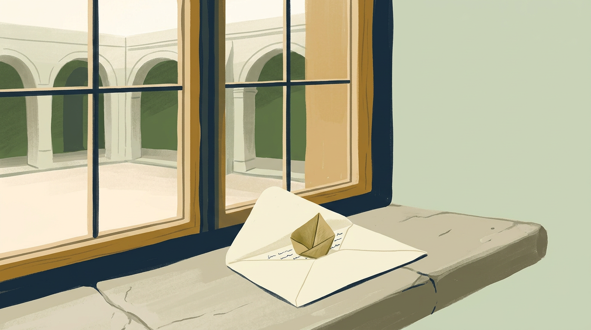

The letter came on a Tuesday, which Lina thought was an odd day for anything important. It had no stamp and no return address, only her name written in green ink that seemed to shift when she tilted it toward the window.
Inside there was no letter at all. There was a seed, folded from thin paper the color of dry grass, no bigger than her thumbnail. When she held it to her ear she could hear, very faintly, something like a sentence being whispered from far away.

Her grandmother had once told her that some words are too heavy to send, so people plant them instead. Lina had laughed then. Now she looked at the seed, then at the empty corner of the courtyard where nothing had grown in years, and she stopped laughing.